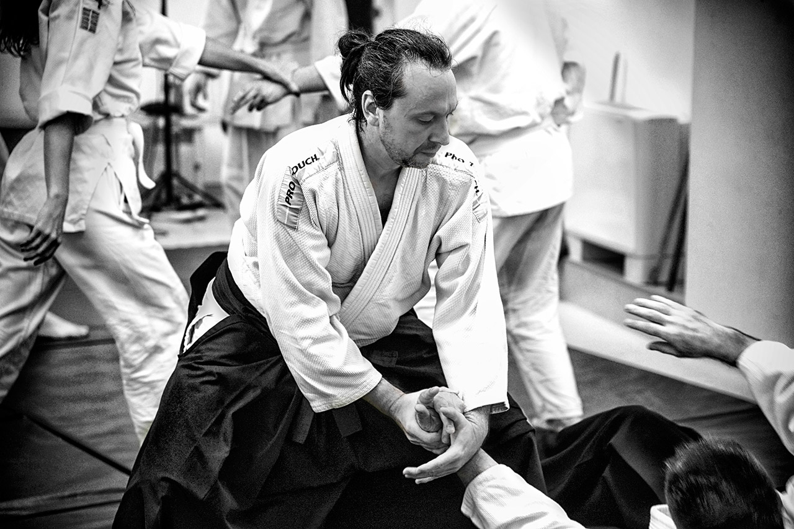
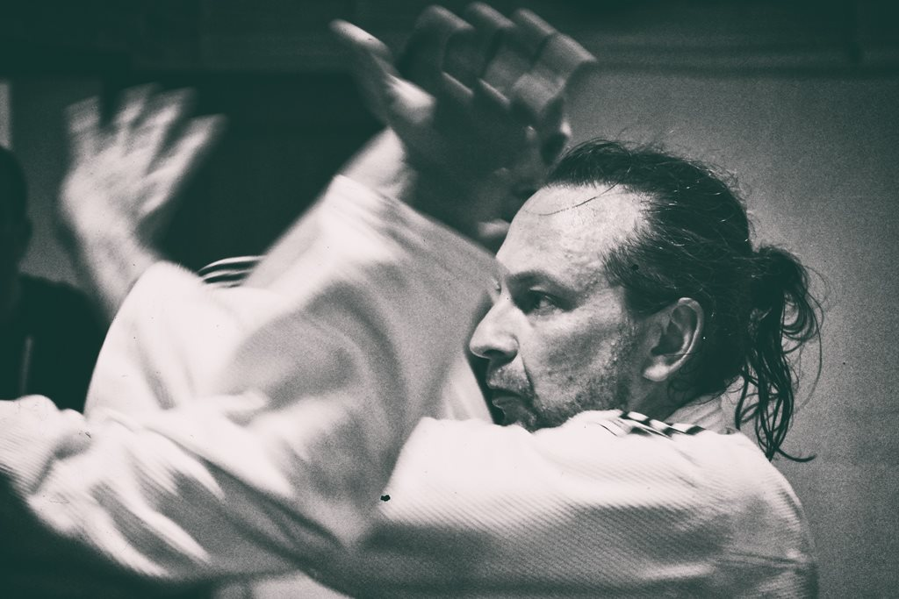
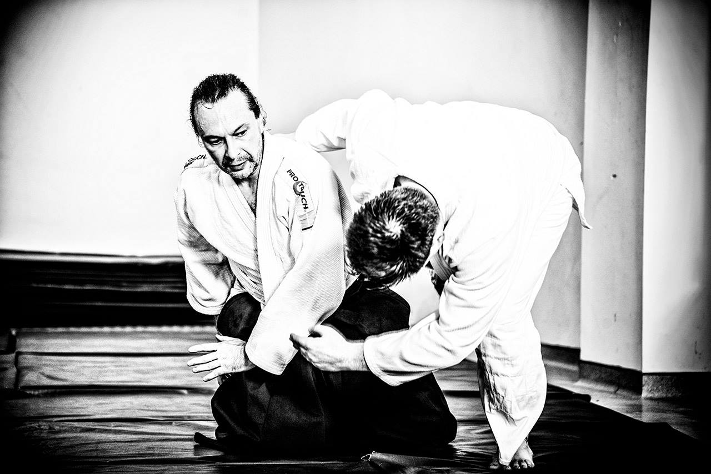
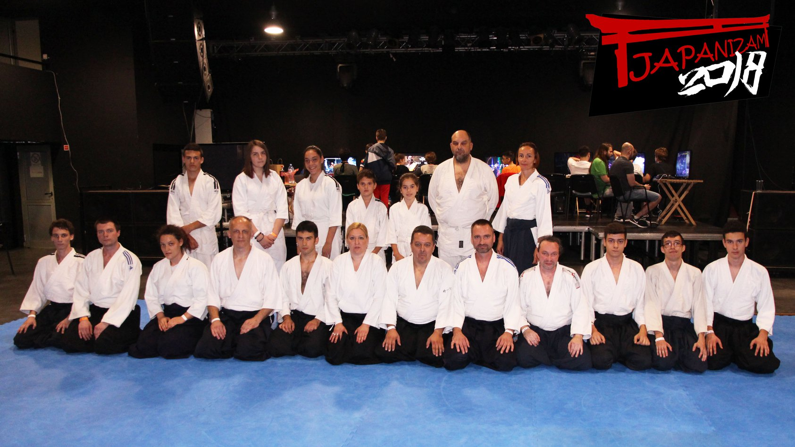

<branimir> </putnik>
biografija
portfolio
interesovanja
fotografija
aikido
muzika
Aikido
Nosilac crnog pojasa, 1.dan Aikikai Hombu Dojo, Tokyo
Član
AD Yamatokan
i
Aikikai Srbije
.

AD Yamatokan, 2017.

AD Yamatokan, 2017.

AD Yamatokan, 2017.
AD Yamatokan, 2017.

Embukai na Japanizamu, Aikido federacija Srbije, 2018.